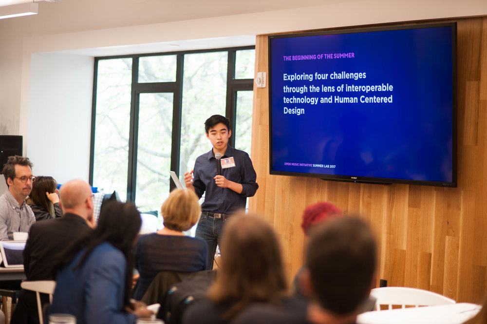
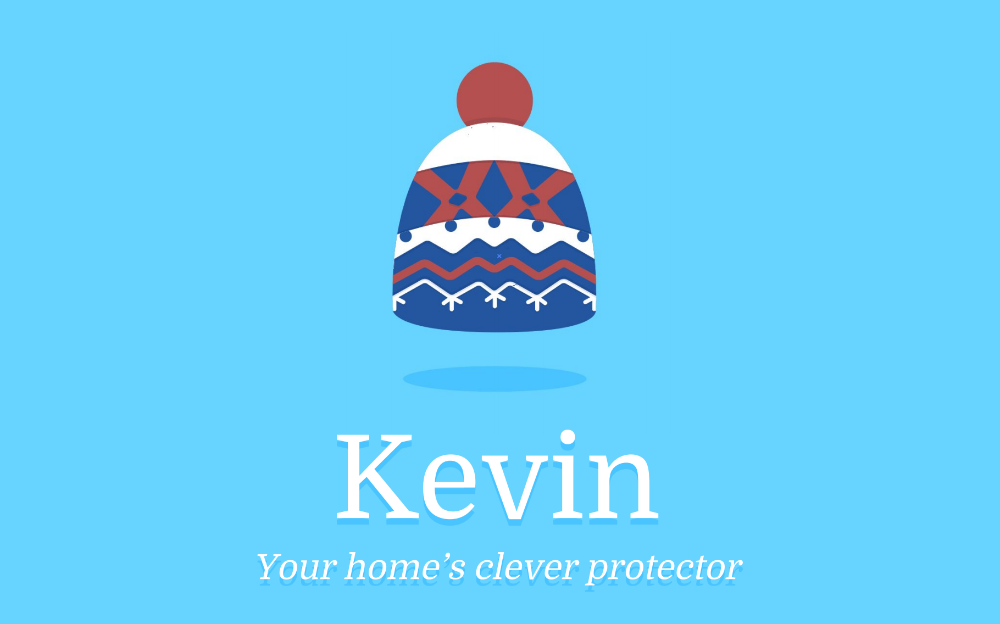
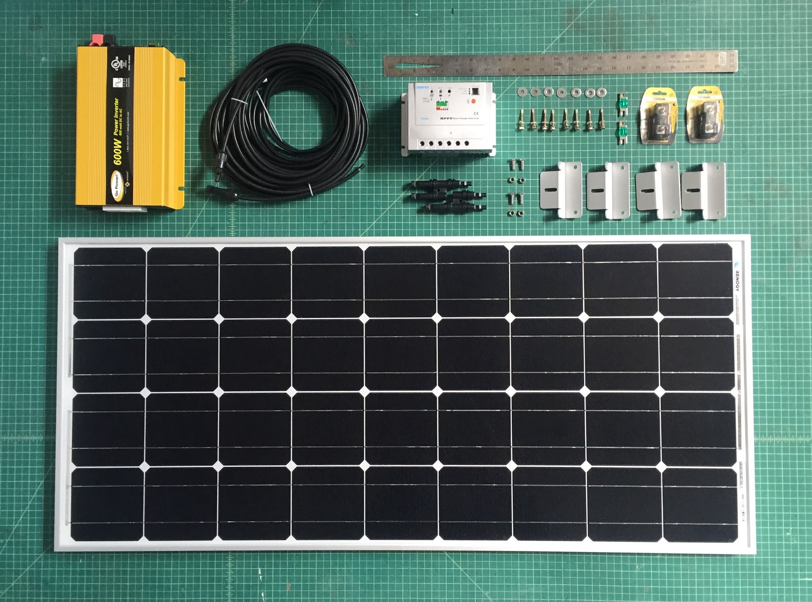
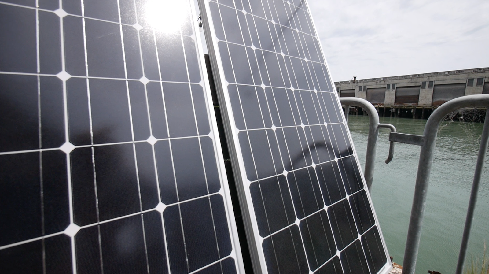
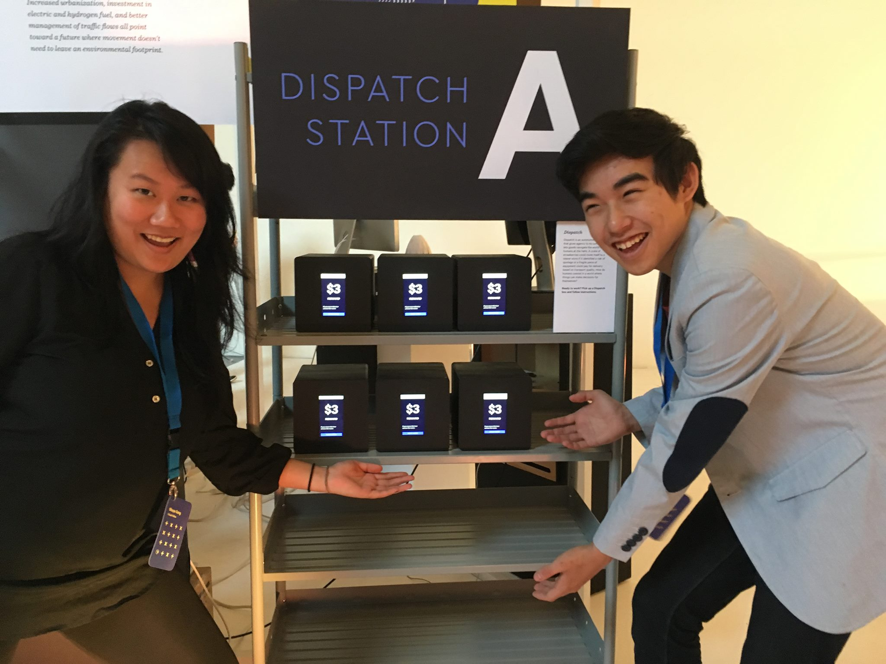
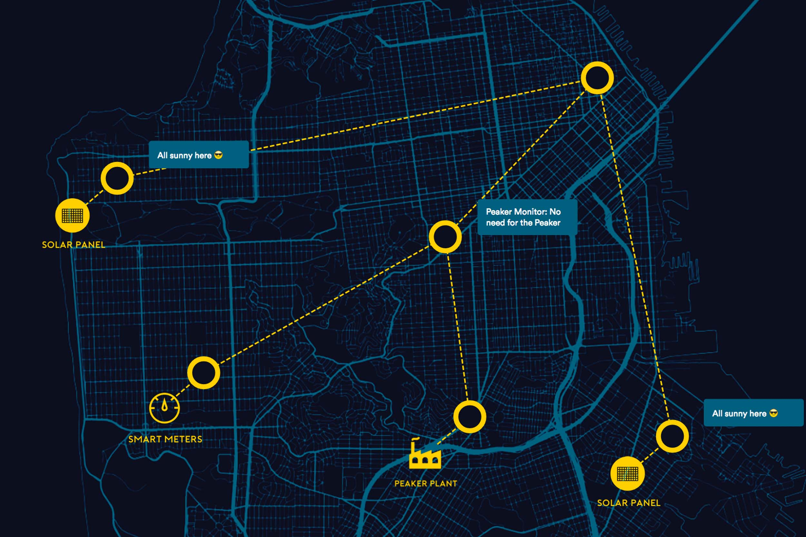
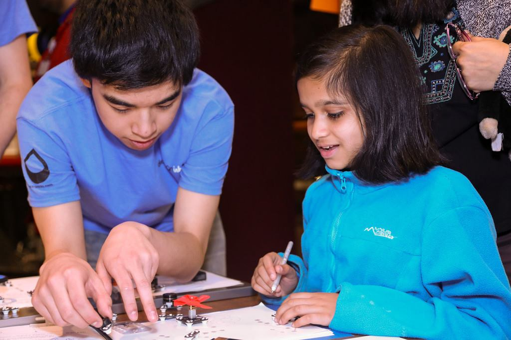
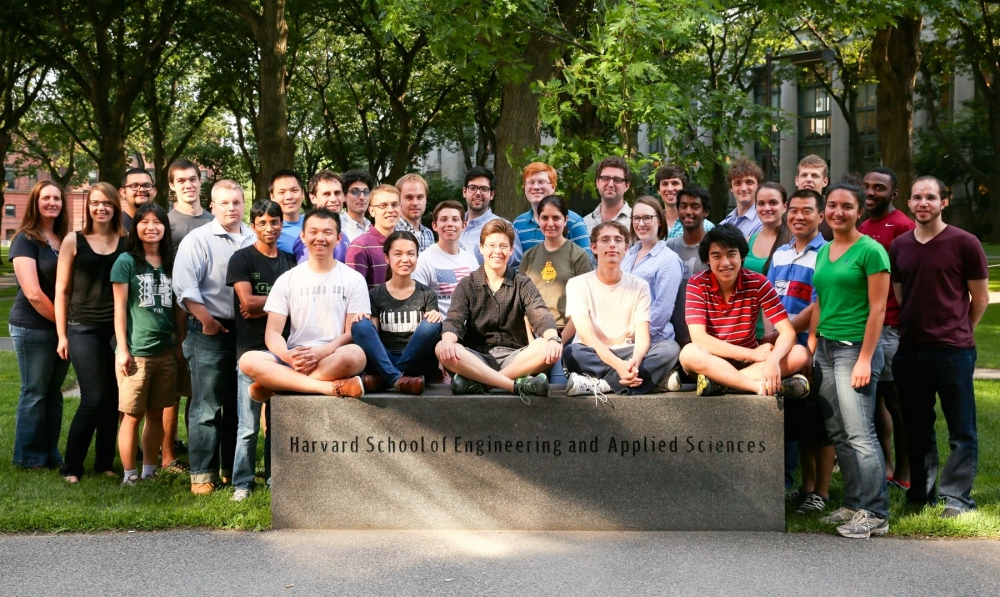
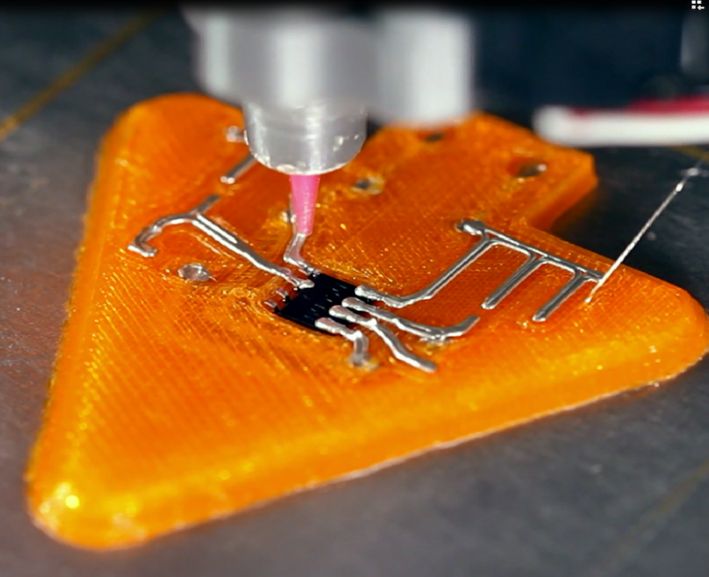
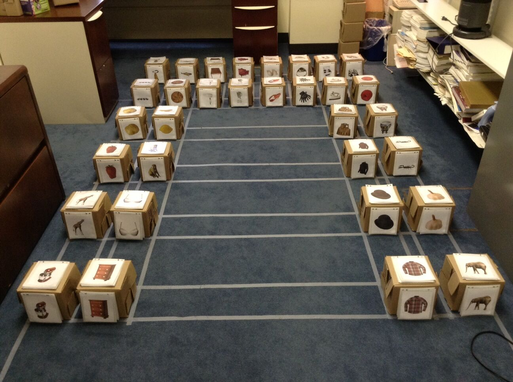

Future of Litigation Finance
How might we envision the future of litigation finance?
Law
Litigation Finance
Artificial Intelligence
Case Origination
2022
How might we reimagine the future of litigation finance?
We created a data-driven marketplace for high-stakes litigation finance. It also serves as a continuous, AI-rated case pipeline for high-velocity origination. Our tools help clients to examine the top of the funnel dealflows with a quantitative lens. — Eric Chan, Isabel Yang, Raj Agrawal, & Krupa Patel

Future of Arbitration
How might we envision the future of internation arbitration?
Law
International Arbitration
Artificial Intelligence
Data-driven Insights
2019
How might we reimagine the future of international arbitration?
International arbitration has become the preferred method for the resolution of cross-border commercial disputes. These disputes are complex, multi-jurisdictional and are high-stakes. What role does AI and predictive analytics have in enchancing decision-making? — Eric Chan, Isabel Yang, Raj Agrawal, Michael Selberg & Alex Sedlack

Future of AR Sound
How might we envision the future of Augmented Reality with only sound?
Gaming
Sound
Augmented Reality
Entertainment
2019
Sound Arcade
How might we create spacial and immersive experiences that only utilize sound? Together with a team we built an arcade system that as a prototype mvp for Bose's new Sound AR Toolkit and API. — Eric Chan

Future of Music
How might we envision the future of music with distributed ledgers and AI?
Music
Digital Assets
Blockchain
Leadership
2017
![Project Lead for Open Music Initiative's Summer Lab 2017 Lead 19 fellows to explore challenges in the music industry. Guided them to tackle 4 questions: How might we catalog, attribute and distribute live DJ mixes? How might we commercialize mixtapes built from original material and back catalogs? How might we compensating musicians for visual works using their songs as data? How might we identifying individuals for their contributions to single tracks in new works? — Eric Chan & Open Music Initative & IDEO Cambridge](img/grid/OMI_Demo+by+TKnight_-2.jpg){kind=link}
Project Lead for Open Music Initiative's Summer Lab 2017
Lead 19 fellows to explore challenges in the music industry. Guided them to tackle 4 questions:
How might we catalog, attribute and distribute live DJ mixes?
How might we commercialize mixtapes built from original material and back catalogs?
How might we compensating musicians for visual works using their songs as data?
How might we identifying individuals for their contributions to single tracks in new works? — Eric Chan & Open Music Initative & IDEO Cambridge

Future of Home Security
How might we envision the future of home security sensor networks?
Security
Nomad
Triangulated Truth
IoT
Trust
Artificial Itelligence
2017
{kind=link}
Kevin: Home Security
How might we use home systems and sensors to better identify scenarios and the intent behind them? A quick sprint to prototype and build.— Eric Chan

Future of Energy
How might we redesign the US energy system of tomorrow?
Energy
Design Principles
2016
{kind=link}
How might we redesign the US energy system of tomorrow?
An article exploring the design priciples that will be crucial in designing the future of the energy grid. These were all insights developed while I was working at IDEO CoLab.— Eric Chan

Future of Assets
How might we create self certified machine generated digital assets?
IoT
Identity
Energy
Digital Assets
Trust
2016
{kind=link}
How might we create self certified machine generated digital assets?
As IDEO CoLab explored decentralized architectures and technology, We discovered that blockchains and the internet of things have an interesting parallel as they promote similar ways of thinking. One operating in the physical world and the other in the digital world, so we asked the question, “What would happen when you cross blockchains and IoT together?” — Eric Chan & Reid Williams

Future of Agency
How might we give an inanimate object it's own agency?
AI
DSAO
Mobility
IoT
Identity
2016
{kind=link}
How might we give an inanimate object it's own agency?
Today, assets rely on humans. This can be slow, costly, and liable to "human" error. Can we design a future where assets advocate for themselves?— Eric Chan & Adam Lukasik & Andrea Santichio

Future of Information Sharing
How might we redesign information capture and distribution to help decentralized systems?
IoT
Data
2016
{kind=link}
Nomad: Data Nodes for All
Nomad is our open source, protocol-level project that enables easy, open information discovery, remixing, composing, and sharing.— Reid Williams & Gavin McDermott & Eric Chan
Future of Educational Identity
How might we redesign educational certificates?
Identity
Education
Digital Assets
2015
{kind=link}
cID: Certified Identity
How do you build an identity in a system where you are presumed guilty until proven innocent? Especially There are also many pieces of identity such as awards, conferences, workshops, education, projects, legal certifications that are currently not encapsulated by today's system.— Eric Chan

Future of Electrical Education
How might we redesign the tools for teaching electronics?
Education
Material Science
Electrical Engineering
2014
{kind=link}
Circuit Scribe
This is a silver based conductive ink pen that allows you to draw circuitry on any surface a normal gel pen can draw on. Learn from actually making and seeing your mistakes happen in real time. Used for electrical education and DYI projects.— Michael Bell & Analisa Russo & Brett Walker & Eric Chan

Future of 3D Manufacturing
How might we use joule heating to print conductives?
3D Printing
Material Science
Mechanical Engineering
2014
{kind=link}
Joule Heating Techniques
This was a project testing the Joule Heating Technique of sintering 3D printed silver colloids and comparing its effeciency to other processes such as photonic annealing. — Michael Bell & Eric Chan

Future of 3D Printing Electronics
How might we redesign 3D printers to print electronics?
3D Printing
Material Science
Mechanical Engineering
2014
{kind=link}
Voxel8
This was the first consumer grade 3D printer that printed both thermoplastics and a silver based colloid. This allowed us to 3D print electronics straight off the printing bed.— Eric Chan

Future of Human Search
A study into the differences between active and passive physical search
IoT
Digital Physical Translation
Ophthalmology
2013
{kind=link}
Visual Attention Study into Short Term Memory
This was a study we did to examine the effects of two different variables on short term memory retention based on visual information. The first was search versus memory, and the second was passive versus active engagement.— Melissa Vo & Eric Chan